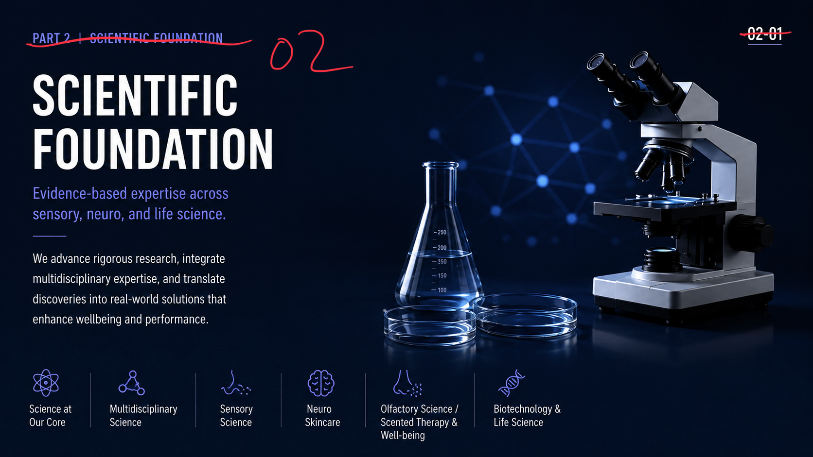
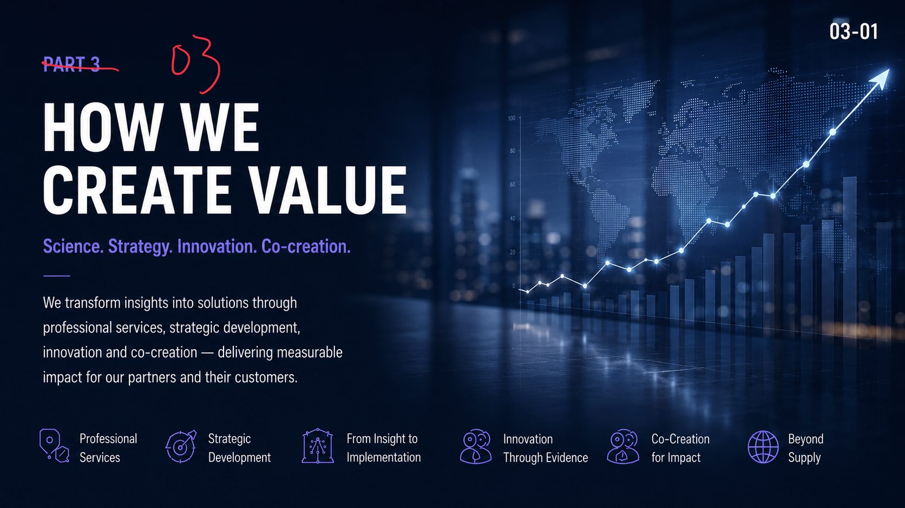
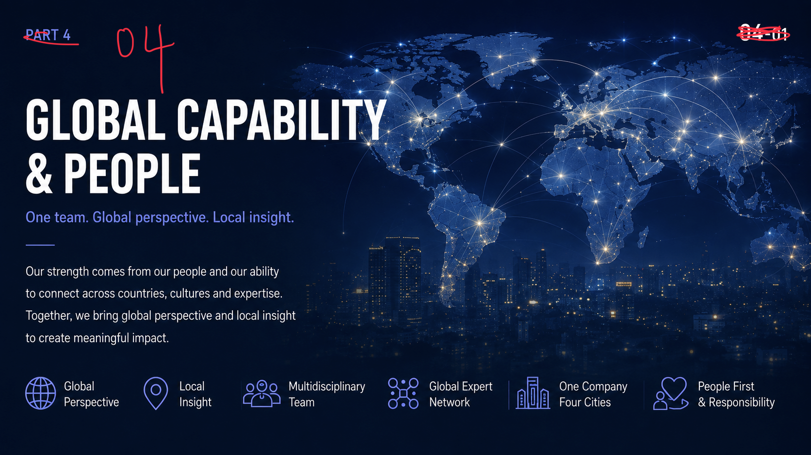
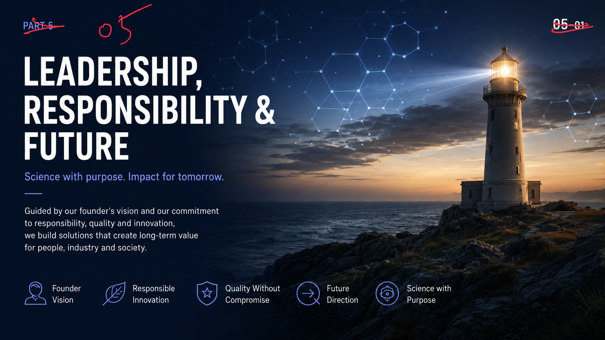

01 Arotec & Scientist
Who We Are
Science-driven innovation
with human relevance.
A&S integrates sensory science, neuroscience, biotechnology, service, and strategy to create meaningful solutions with global perspective and long-term responsibility.
- Who We Are
- Our Purpose
- Our Mission
- Our Vision
- Our Values
02 Who We Are
Scientific Foundation
Evidence-based expertise across sensory, neuro, and life science.
We advance rigorous research, integrate multidisciplinary expertise, and translate discoveries into real-world solutions that enhance wellbeing and performance.

- Science at Our Core
- Multidisciplinary Science
- Sensory Science
- Neuro Skincare
- Olfactory Science / Scented Therapy & Well-being
- Biotechnology & Life Science
03 Who We Are
How We Create Value
Science. Strategy. Innovation. Co-creation.
We transform insights into solutions through professional services, strategic development, innovation and co-creation, delivering measurable impact for our partners and their customers.

- Professional Services
- Strategic Development
- From Insight to Implementation
- Innovation Through Evidence
- Co-Creation for Impact
- Beyond Supply
04 Who We Are
Global Capability & People
One team. Global perspective. Local insight.
Our strength comes from our people and our ability to connect across countries, cultures and expertise. Together, we bring global perspective and local insight to create meaningful impact.

- Global Perspective
- Local Insight
- Multidisciplinary Team
- Global Expert Network
- One Company
Four Cities - People First & Responsibility
05 Who We Are
Leadership, Responsibility & Future
Science with purpose. Impact for tomorrow.
Guided by our founder's vision and our commitment to responsibility, quality and innovation, we build solutions that create long-term value for people, industry and society.

- Founder Vision
- Responsible Innovation
- Quality Without Compromise
- Future Direction
- Science with Purpose